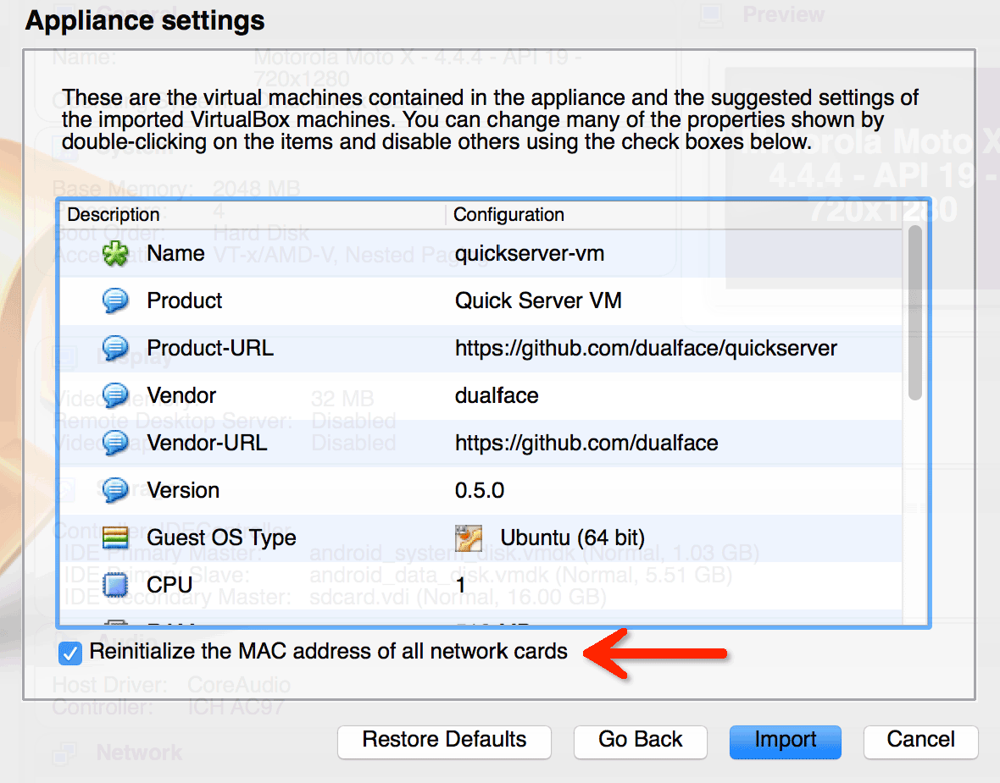
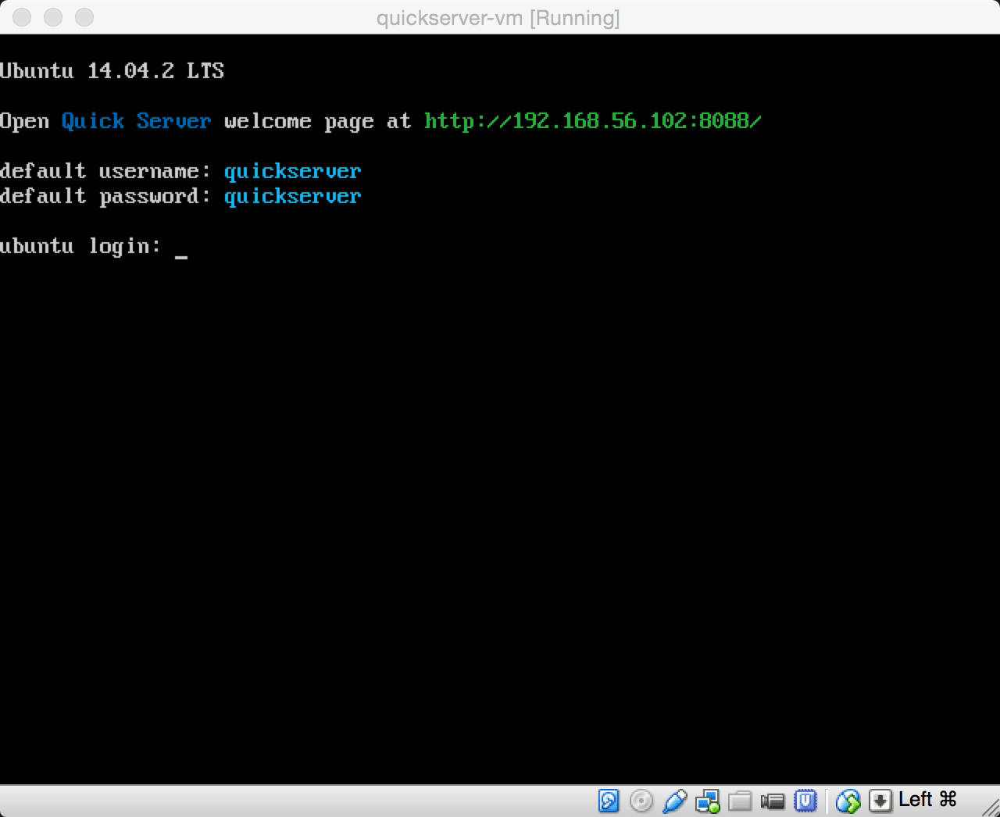

安装 Quick Server
Quick Server 安装和部署可以使用两种方式：
- 下载 Quick Server 源代码，并使用 shell 脚本进行安装，适合于在生产环境部署自己的 Quick Server 实例。
- 使用我们提供的虚拟机，直接测试 Quick Server 环境。适合测试和开发阶段。
使用 install.sh 脚本安装
首先，我们需要下载 Quick Server 代码。我们可以使用 Git 直接从 Quick Server 的代码仓库拉取。
$ git clone https://github.com/dualface/quickserver.git $ cd quickserver $ sudo ./install.sh
然后进入 Quick Server 所在目录，运行其中的 install.sh 脚本即可完成安装。
目前
install.sh仅在 Ubuntu 和 CentOS 操作系统中进行了测试。
install.sh 脚本支持一些参数:
--prefix=arg: 指定 Quick Server 的安装路径。默认路径是/opt/quick_server。-a, --all: 安装 Quick Server 所有基本组件, 包括 nginx(OpenResty), Quick Server Framework, Redis, 以及 Beanstalkd。这是install.sh的默认选项。-n, --nginx: 仅安装 nginx(OpenResty) 以及 Quick Server Framework。-r, --redis: 仅安装 Redis。-b, --beanstalkd: 仅安装 Beanstalkd。-h, --help: 显示参数帮助。
使用虚拟机
要使用安装配置好 Quick Server 的 Ubuntu 虚拟机文件，需要首先安装 VirtualBox 虚拟机软件。
- 下载 VirtualBox
-
安装 VirtualBox 后，启动 VirtualBox，选择菜单“File -> Import Appliance”打开“Appliance to import”对话框。
- 选中
quickserver-vm.ova文件。 -
在
Appliance settings对话框中，选中“Reinitialize the Mac address of all network cards”选项。
-
点击“Import”完成导入操作。
-
虚拟机导入后，启动虚拟机即可看到下列画面：

按照屏幕提示在浏览器中访问指定网址，即可看到 Quick Server 的监控界面：

Quick Server 的启动
Quick Server 的启动，停止以及进程状态查看是通过 start_quick_server.sh，stop_quick_server.sh 以及 status_quick_server.sh 完成的。
start_quick_server.sh 脚本
start_quick_server.sh 脚本支持如下的参数：
--debug: 以调试模式启动 Quick Server。-a, --all: 启动 Quick Server 所有基本组件, 包括 nginx(OpenResty), Quick Server Framework, Redis, 以及 Beanstalkd。这是start_quick_server.sh的默认选项。-n, --nginx: 仅启动 nginx(OpenResty) 以及 Quick Server Framework。-r, --redis: 仅启动 Redis。-b, --beanstalkd: 仅启动 Beanstalkd。-h, --help: 显示参数帮助。
我们可以执行这个脚本来启动 Quick Server。
$ sudo ./start_quick_server.sh
如果要以调试模式来启动 Quick Server，可以这样：
$ sudo ./start_quick_server.sh --debug
stop_quick_server.sh 脚本
stop_quick_server.sh 脚本支持如下的参数：
--reload: 向 nginx 进程发送 SIGHUP 信号，用于重新载入配置，重启 nginx 的 worker 进程。该选项仅在-n或者--nginx被指定时有效。-a, --all: 停止 Quick Server 所有基本组件, 包括 nginx(OpenResty), Quick Server Framework, Redis, 以及 Beanstalkd。这是stop_quick_server.sh的默认选项。-n, --nginx: 仅停止 nginx(OpenResty) 以及 Quick Server Framework。-r, --redis: 仅停止 Redis。-b, --beanstalkd: 仅停止 Beanstalkd。-h, --help: 显示参数帮助。
我们可以执行这个脚本来停止 Quick Server。
$ sudo ./stop_quick_server.sh
如果要 nginx 重新载入 nginx 的配置，并重启 nginx 的 worker 进程，可以这样使用：
$ sudo ./stop_quick_server.sh -n --reload
值得注意的是，
--reload并不是重新载入config.lua，而仅仅是重新载入 nginx 的配置文件nginx.conf，并重启所有的 nginx worker 进程，nginx master 并不会重启。
status_quick_server.sh 脚本
status_quick_server.sh 脚本用于查看与 Quick Server 相关的进程。直接使用它就可以了：
$ sudo ./status_quick_server.sh
终端会将结果以多个 section 的方式返回，包括 [Nginx] ， [Redis] ， [Beanstalkd] 以及 [Monitor] 。每一个 section 下包含了各自相关的进程。
要是以默认的
-a或者--all方式启动 Quick Server，那么所有的 section 下都应该看到有进程在运行。如果以其他选项启动了 Quick Server 的部分组件，那么只会看到部分组件的进程在运行，并且[Monitor]下不会有进程运行，也就是在这种情况下， Monitor 不会启动。